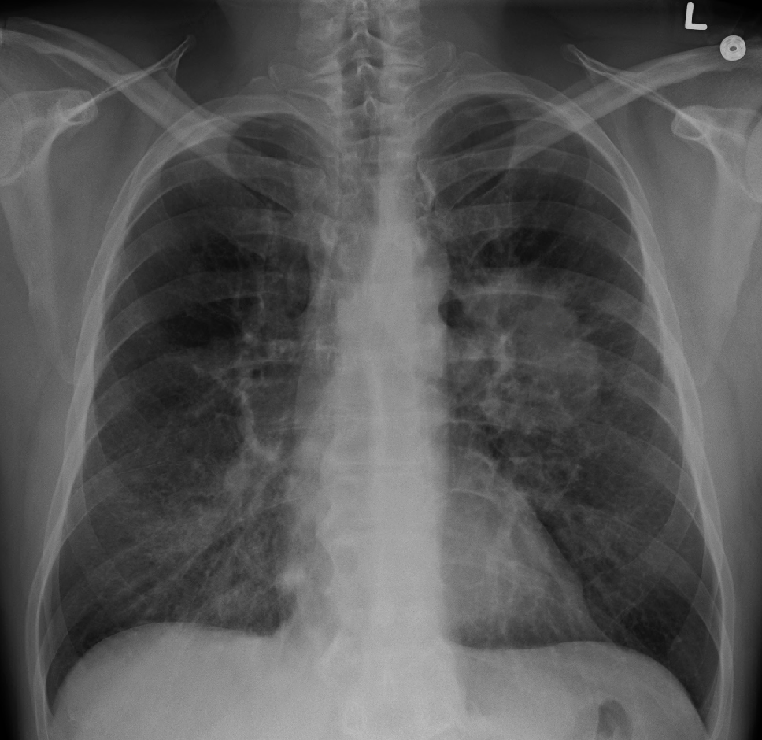

Ficha del catálogo
Nódulo y masa pulmonar (cáncer de pulmón)
- Sistema
- Respiratorio
- Modalidad
- RX
- Región
- Tórax
- Dificultad
- Avanzado
El carcinoma broncogénico puede manifestarse como un nódulo, una masa, una atelectasia por obstrucción bronquial o un derrame pleural. La radiografía suele ser el estudio que da la primera alerta, aunque la caracterización requiere tomografía.
Técnica
Radiografía posteroanterior y lateral. Todo hallazgo sospechoso se completa con tomografía con contraste, y en la estadificación se emplea además la tomografía por emisión de positrones.
Qué observar
- Nódulo (menor de 3 cm) o masa (mayor de 3 cm) con bordes espiculados o lobulados, rasgos que sugieren malignidad
- Crecimiento respecto a estudios previos: Comparar siempre con radiografías antiguas es el dato más valioso
- Atelectasia o consolidación persistente distal a una obstrucción bronquial
- Adenopatías hiliares o mediastínicas que ensanchan el mediastino
- Derrame pleural asociado, que suele implicar enfermedad avanzada
- Lesiones óseas líticas en costillas o vértebras por metástasis
- Zonas ciegas donde se ocultan lesiones: Vértices, detrás del corazón, bajo los diafragmas y sobre las costillas posteriores
Hallazgos
Masa pulmonar de contornos irregulares que altera la arquitectura normal del parénquima.
Perlas
Un nódulo con calcificación central, laminar o en palomita de maíz es casi siempre benigno (granuloma o hamartoma). En cambio, la calcificación excéntrica o irregular no descarta malignidad. Aprender los patrones de calcificación evita estudios innecesarios.
Diagnóstico diferencial
- Granuloma calcificado
- Presenta calcificación central, laminar concéntrica o difusa, bordes lisos y estabilidad a lo largo del tiempo, patrones considerados benignos.
- Hamartoma
- Es un nódulo de bordes lisos con grasa en su interior y a veces calcificación en palomita de maíz, hallazgos que la tomografía identifica con seguridad.
- Nódulo infeccioso o inflamatorio
- Suele ser de aparición reciente, puede acompañarse de otras lesiones y de síntomas infecciosos, y desaparece o disminuye en el control tras el tratamiento.
- Metástasis pulmonares
- Son habitualmente múltiples, redondeadas, de predominio en las bases y en la periferia, en un paciente con tumor primario conocido.
- Malformación arteriovenosa pulmonar
- Se identifica una arteria nutricia y una vena de drenaje que llegan al nódulo, con realce intenso e igual al de los vasos tras el contraste.
- Atelectasia redonda
- Es una opacidad periférica adyacente a pleura engrosada, con vasos y bronquios que convergen hacia ella describiendo el signo de la cola de cometa.
Simuladores
- La sombra del pezón simula un nódulo bien definido en los campos inferiores (se confirma repitiendo la proyección con un marcador radiopaco sobre el pezón).
- Los osteofitos vertebrales, las callosidades costales y las lesiones óseas benignas se proyectan sobre el pulmón como densidades nodulares (su seguimiento en la proyección lateral o con tomografía las sitúa fuera del parénquima).
- La superposición de vasos en el hilio y en las bases crea falsos nódulos que se disipan al cambiar de proyección.
- Los electrodos, botones y objetos externos generan opacidades perfectamente redondas y de densidad metálica, ajenas al paciente.
Por modalidad
- RX
- Suele dar la primera alerta y permite comparar con estudios antiguos, que es el dato más valioso para valorar el crecimiento, pero tiene baja sensibilidad para nódulos pequeños.
- TC
- Es la técnica de caracterización y de estadificación local: Define tamaño, márgenes, densidad, calcificación, relación con la pleura y afectación ganglionar.
- RM
- Aporta valor en el tumor del sulcus superior, en la invasión de la pared torácica, del plexo braquial y del mediastino, y en el estudio de metástasis cerebrales.
- US
- Guía la punción de lesiones periféricas en contacto con la pleura y de adenopatías supraclaviculares accesibles.
Protocolo
Radiografía posteroanterior y lateral en bipedestación e inspiración profunda. Ante un hallazgo sospechoso se realiza tomografía de tórax con contraste yodado intravenoso, con cortes finos y reconstrucciones que permitan medir el nódulo en su diámetro mayor y valorar su volumen, incluyendo suprarrenales para la estadificación. En el tamizaje de personas de alto riesgo se emplean protocolos de baja dosis sin contraste. La estadificación se completa con estudios metabólicos y con resonancia cerebral cuando corresponde, y las biopsias se guían por tomografía o por vía endoscópica.
Clasificación
Para el nódulo pulmonar detectado de forma incidental se aplican las recomendaciones de la Sociedad Fleischner, que establecen la conducta según el tamaño, si el nódulo es sólido, subsólido o en vidrio deslustrado, y el riesgo del paciente: Los nódulos sólidos muy pequeños en pacientes de bajo riesgo no requieren seguimiento, mientras que a medida que aumenta el tamaño se indican controles a intervalos definidos o estudio adicional. En programas de tamizaje se emplean sistemas estructurados de categorías que asignan un grado de sospecha y una conducta. La extensión tumoral se codifica con el sistema TNM, que valora el tumor, los ganglios y las metástasis y determina el estadio y el tratamiento.
Errores frecuentes
- No buscar estudios previos, ya que la estabilidad prolongada de un nódulo sólido es el argumento más sólido de benignidad.
- Aceptar como nódulo lo que es una lesión de la pared torácica o un artefacto externo por no confirmarlo en dos proyecciones.
- Aplicar los criterios de seguimiento de nódulo incidental a pacientes con cáncer conocido o con síntomas, situaciones en las que no corresponden.
- Ignorar las zonas ciegas de la radiografía, donde se ocultan muchos tumores: Vértices, región retrocardiaca y regiones subdiafragmáticas.

cancer nodulo masa pulmon neoplasia atelectasia torax espiculado